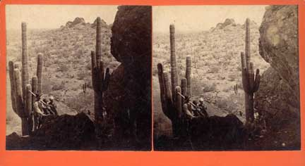

Vintage Papago Park Images from the Collection of Jeremy Rowe Vintage Photography all images © 2007 |
|
Some of the earliest images of Papago Park were stereographs made in the late 1880's by photographers such as J. C. Burge, and George Rothrock and after 1900 by Olaf P Larson. |
 George Rothrock Stereograph ca 1890 |
| Papago was a popular destination for amateur and postcard photographers, overlapping the sereo era and showing the evolution of Papago Park
|
Albertype postcard ca 1905 |
Many amateur photographers made images of Papago Park after hand cameras became popular in the early 20th century. Images of filming Gary Cooper's first major western, Arizona Bound, in Papago Park in 1927.
|
Gary Cooper and Arizona Bound film crew ca 1927 |